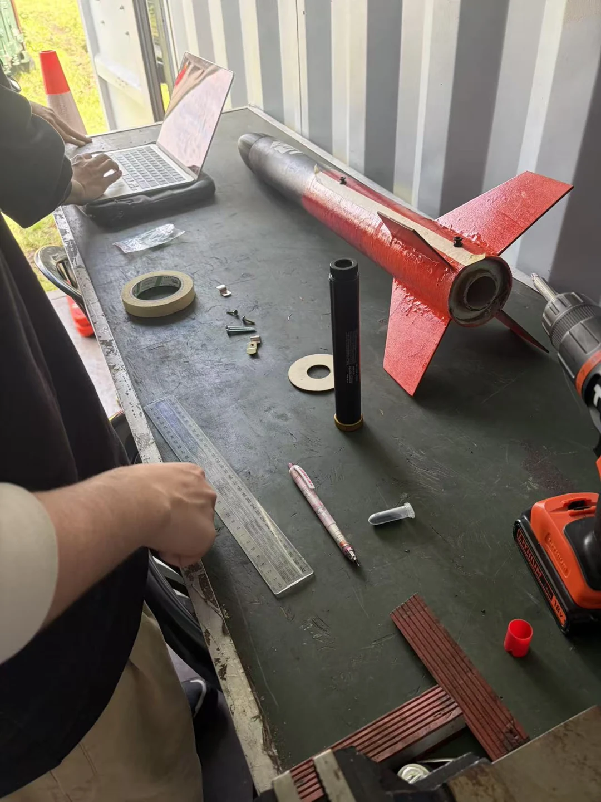

← All projects08 / 08
Level 1 Rocket Launch.
- Altitude
- 550 m
- Peak speed
- Mach 0.4
- Stability margin
- 1.8

Flight stability
Increasing the stability margin was a design priority. The configuration had a reported stability margin of 1.8.
Flight video
Build and launch photos



NEXT PROJECT · 01Custom RC Car